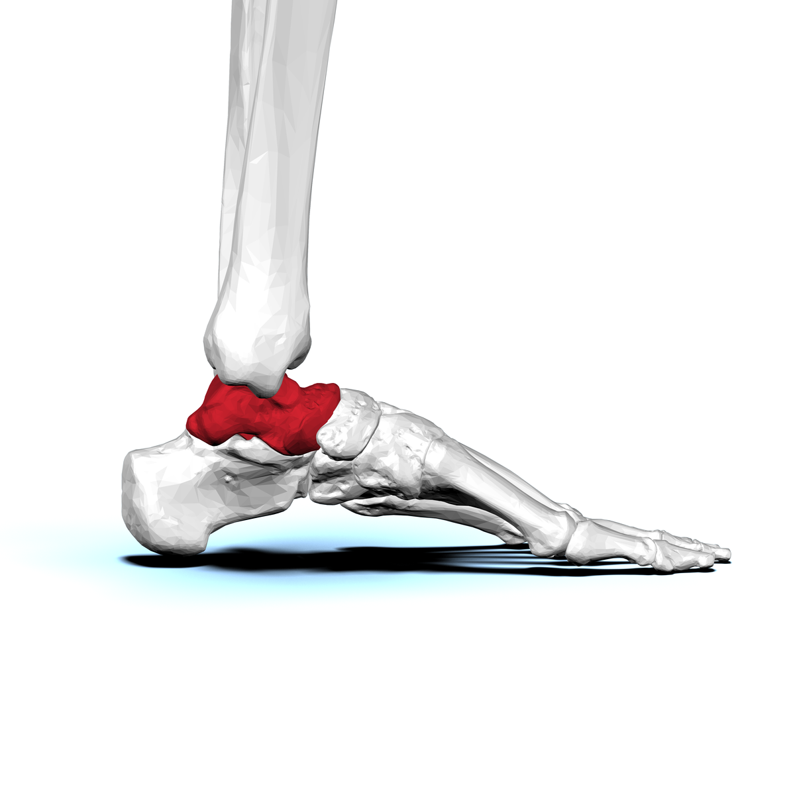

Aktivität 1
Den Astragalus finden
Suche einen Fußknochen beim Menschen und bei verschiedenen Tieren.
Den Talus/Astragalus im Fuß lokalisieren, seine Lage im Tarsus verstehen und erkennen, dass es einen vergleichbaren Knochen auch bei anderen Säugetieren gibt, auch wenn ihre Pfoten anders aussehen als unsere Füße.